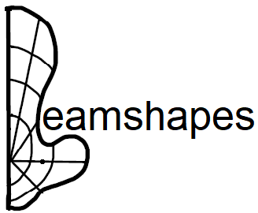
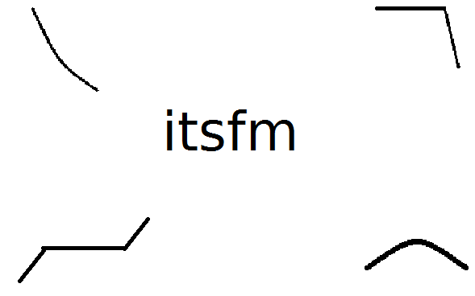
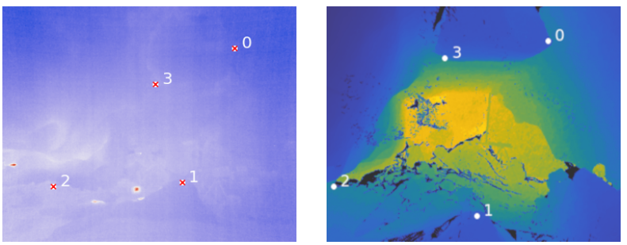

Scientific software packages & code
Following the motto of 'build your own tools', a driving philosophy of the lab is to 'build it once, but build it well' when it comes to scientific software tools.
Packages
beamshapes
beamshapes is a a Python package to calculate sound radiation patterns for a few all-round model sound sources. The sound radiation of more detailed sound sources are computationally involved to calculate, and their code isn't available with the published paper. This often means one would use a 'simpler' model that is easier to calculate, rather than implement a more detailed one from scratch. beamshapes aims to hit the middle ground, implementing a few detailed source models through an open-source package (and hopefully with more sources to come).
itsfm
 itsfm is a Python package to segment sounds by how 'wavy' they are. This package was specifically made to ensure accurate segmentation of the stapler-pin shaped horseshoe bat calls, but is likely to work on other sounds without strong harmonics (see page for examples). For more details on its performance and comparison to commonly used methods see the see here.
Other methods & code
DMCP

A Python implementation of the 'depth-map correspondence' algorithm by Julian Jandeleit. DMCP takes a (thermal/RGB) camera scene and finds the camera location in the LiDAR scene without a calibration object using user annotations. This is a baseline method to align featureless subterranean cave scenes where a range of 'standard' computer-vision methods fail. Link to the code, and see the paper here.